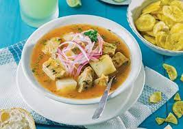
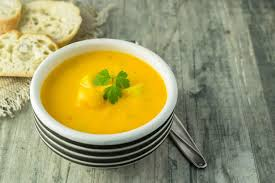
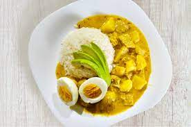
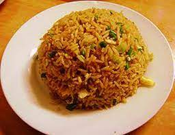

Este delicioso plato tradicional de la sierra Ecuatoriana lleva como ingredientes principales: cortes
de
la pata de res y mote.

Caldo de patas
A menudo se sirve con trozos de pollo con granos de arroz o pasta, zanahoria, papa
amarilla, apio, alberjas, cebolla
blanca, etc. Se considera también un remedio casero contra los enfriamientos y los catarros

Caldo de pollo
El encebollado es un plato típico ecuatoriano, es considerado
el plato insignia de la gastronomía ecuatoriana y sus ingredientes son pescado, yuca y cebolla
colorada. Lo puedes acompañar con canguil o chifles.

Encebollado
Una de las sopas tradicionales de la Sierra Ecuatoriana, hecha con papa, achiote, queso, y cilantro.
Una rica y
especita sopa que tienes que probar

Locro de papas
El sancocho es uno de los platos preferidos de los ecuatorianos,con carne de res, zanahorias, verde
que son sus ingredientes principales

Sancocho de res
Deliciosa sopa hecha con camarones y verde, aunque en ocaciones se la puede servir con pasta
(cabello de ángel).

Sopa de camarónes
La papa es muy versátil y de sabor muy suave. El enrollado de papa es un plato muy agradable y el
relleno tiene ingredientes como zanahoria, mayonesa de ajo, alberjas, pollo mechado, etc.

Enrollado de papas
Plato tradicional elaborado de la panza de la res con papas en salsa de maní acompañada con arroz y
huevo duro y aguacate.

Guatita
El arroz con pollo es un plato lleno de sabores caseros y que se prepara de distintas formas y con
distintos
ingredientes como verduras, pechuga de pollo, embutidos lo acompañas con tajadas de plátano maduro

Arróz Relleno
Su ingrediente principla es el pollo acompañado de arroz amarillo, plátanos fritos y ensalda

Seco de pollo